江西井冈山蜜柚2022年第一季度电商销售白皮书
一、2022年第一季度基本走势
（一）评价热度：整体评价热度较低，呈下降趋势
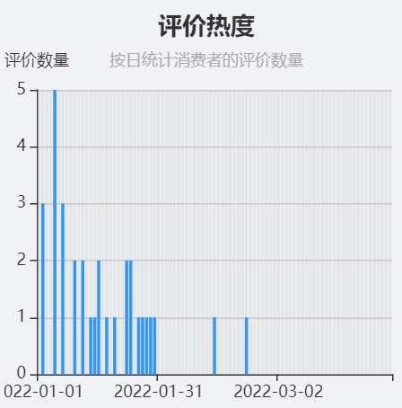
蜜柚在第一季度的评价热度整体呈下降趋势，平均每天少于一条评价，评价热度总体上较低。受元旦假日影响，蜜柚在一月初的评价热度最高，后呈下滑趋势。二月份的节日（情人节、2022年2月22日）当天评价热度表现良好，其他天数评价热度降至零。三月份整体评价热度为零。
（二）评分变化：整体评分较为满意，评分变化较小
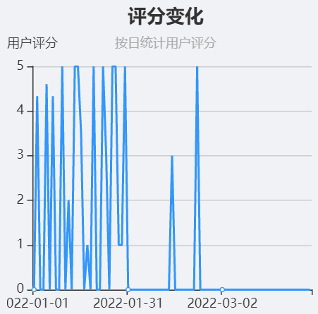
2022 年第一季度，消费者对江西井冈山蜜柚整体较为满意，评分集中在4~5分区间，只有个别评分低于2分，整体评分变化较小，评分较为稳定，可见消费者对江西井冈山蜜柚认可度较高，产品购买体验良好。
（三）同期对比：评价热度依旧较低，整体评分有所提升
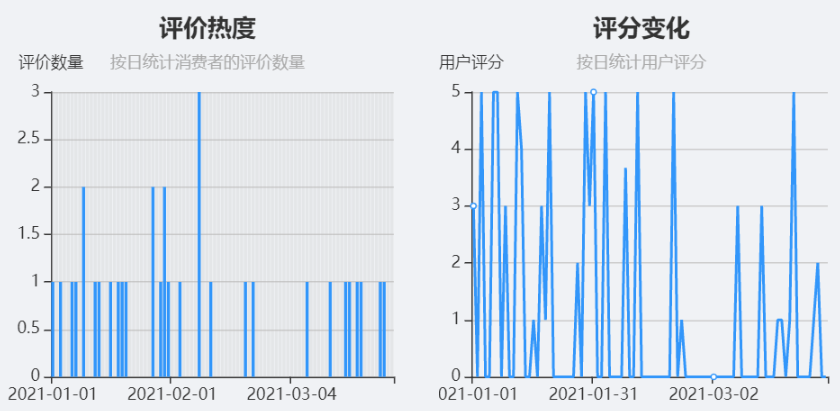
与去年同期数据对比，在评价热度方面，消费者对江西井冈山蜜柚的评价热度依旧处于低位，且今年呈现的整体热度趋势较去年波动较大；在评分方面，相比较于去年同期，2022年第一季度中消费者的评分变化有所减小，评分更集中于高分区间，低分区间的评价大幅减少，整体评分上涨，可见江西井冈山蜜柚不断优化升级，获得了更高的消费者忠诚度。
二、分析概览
（一）用户满意度分析：用户整体满意度较高，超过六成的消费者表示非常满意
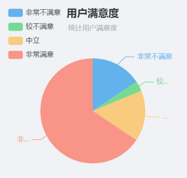
2022年第一季度中，消费者对江西井冈山蜜柚的满意度处于中上水平，65%的用户表示非常满意，但有接近20%的用户表示非常不满意或较不满意，可见江西井冈山蜜柚在用户满意度上依旧有一定的上升空间。
（二）用户评价概况：消费者最关注的是蜜柚的物流，其次是口感、品质、分量等因素
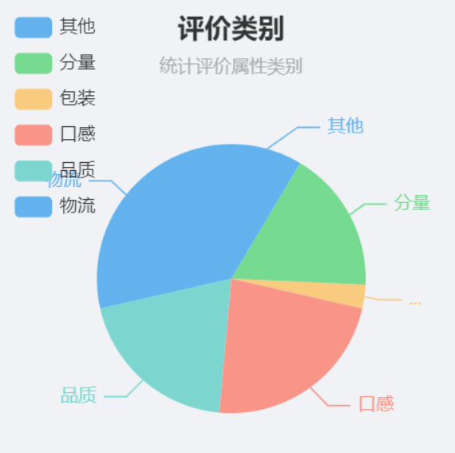
接近30%的评价与物流有关，可见对于本产品，消费者对物流这一产品元素的感知明显。口感、品质及分量的评价占比分别为23%、20%和17%，再者为包装，占3%。评价占比的高低表明了消费者对这一因素的看重程度，对于江西井冈山蜜柚，消费者对产品的物流最为看重，商家需要重点关注这一因素，其次才是产品的口感、品质和分量，在满足前四个因素后，才考虑产品的包装方面。
三、分析详情
（一）物流：产品的物流服务有待提升，八成消费者表示不满意
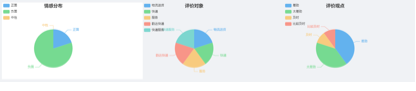
如果说以网店为核心的电商平台开启了用户消费体验的第一环节，那么以物流为主导的交付环节则决定着用户体验的上限。在用户评价类别中提到，物流是消费者对本产品（江西井冈山蜜柚）最关注的产品属性，物流体验在很大程度上决定着消费者的购物体验。在2022年第一季度的物流评价数据中，有八成的用户给出了负面的评价，可见该产品在物流方面有着很大的提升空间，只有提升消费者的物流体验感，才能更好地留住顾客。
（二）口感：清甜飘香是江西井冈山蜜柚的特色标签之一
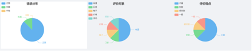
冈山蜜柚，清甜飘香。地处典型中亚热带湿润季风区的井冈山，适宜绝大部分柑橘类果树的栽培。在2022年第一季度的口感评价数据中，江西井冈山蜜柚在口感属性上表现极佳，近九成的消费者给出了正面的评价，可见作为江西省果业三大金字招牌之一的蜜柚名不虚传。
（三）品质：江西井冈山蜜柚品质表现良好，超七成用户给出正面评价
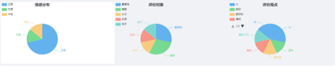
雨量充沛，无霜期长的江西井冈山气候给蜜柚提供了优越的培育环境，对蜜柚的优良品质作出了最好的保障。2022年第一季度的品质反馈中，超七成的用户给出了正面的评价，但同时也有15%的用户认为蜜柚的糖度还有一定的改善空间。
（四）分量：产品分量的评价反馈均为正面，消费者对此十分满意
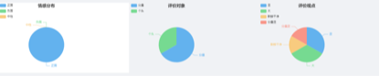
本季度得到的产品分量评价均为正面，无一负面反馈，可见消费者对江西井冈山蜜柚分量属性的满意度极高。其中，分量足是消费者对其评价的关键词。
（五）包装：产品包装属性表现极佳，获得全好评
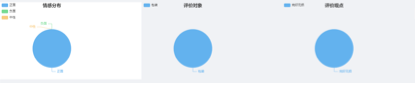
优质的产品包装不仅能保证产品运输过程中的安全和质量，还能在一定程度上提高消费者的购物体验，是当今时代下重要的营销手段之一。江西井冈山蜜柚的包装属性在本季度中表现极佳，获得消费者的一律好评，可见商家在包装方面的用心。
（六）其他：产品个头也是消费者较为关注的因素之一
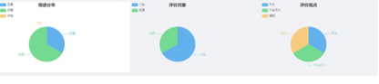
除了上述的产品特性外，消费者对产品的个头大小方面也较为关注。由于江西井冈山蜜柚的个头大小未能达到消费者预期，得到的购买反馈均偏向于负面。可见该产品在个头大小方面有很大的提升空间。
四、发展建议
（一）政府方面
综合江西井冈山蜜柚2022年第一季度的用户评价数据分析，可得出以下结论：①
作为江西果业三宝之一的井冈山蜜柚，社会认可度及消费者忠诚度较高，口碑良好。② 受疫情影响，江西井冈山蜜柚的消费热度在第一季度呈下降趋势，消费热度受节假日影响较大。③
物流服务是消费者对本产品最关注的产品属性，其次是口感、品质和分量，最后才是产品的包装。④ 分量足、包装好是消费者对江西井冈山蜜柚的普遍评价。基于此为江西井冈山政府在营销层面提出以下几点建议：
1. 小产品，大品牌，积极打造江西井冈山蜜柚品牌
（1）推动蜜柚产业品牌化发展，打造全国性优质蜜柚培育基地
政府相关部门要坚定推动蜜柚产业的品牌化发展，彻底落实好目前的“一园两圃”良种繁育体系的建设，朝着构建现代化经济经济体系的方向奋斗。此外，还要加快健全病虫害防治、技术服务和市场销售三大保障体系，扩大农业开放，推动蜜柚产业规模化、标准化、生态化和品牌化发展，努力打造全国最大的优质蜜柚基地，巩固发展江西井冈山蜜柚的品牌。
（2）深入挖掘国内的营销窗口，提高国内市场的覆盖率
至2021年，江西井冈山蜜柚品牌已在北上广深等地建立了22个营销窗口（专柜），未来还需继续挖掘国内的营销商机，开拓更多的国内营销窗口，积极与各地政府合作，共同推进江西井冈山蜜柚的入驻和销售。各地大型的水果批发市场、交通枢纽处是蜜柚优选的营销渠道。
（3）充分利用“一带一路”和“互联网+”机遇，拓宽国际市场
至今为止，江西井冈山蜜柚已经远销国外，在2021年里，吉安庆丰农业等3家企业向新加坡、加拿大等地出口井冈蜜柚56.3吨。在未来，政府要抓住“一带一路”和“互联网+”的机遇，为蜜柚的海外市场寻找新商机。借助“互联网+”，通过线上线下结合的方式，将江西井冈山蜜柚品牌宣传到一带一路及其他海外国家，开辟更广阔的国际市场。
（4）搭建一体化的物流服务系统，提升品牌的专业度
在2022年第一季度的江西井冈山蜜柚的用户评价数据中，八成的消费者对本产品的物流服务表示不满意，而物流恰恰是消费者最关注的产品属性。蜜柚属于易腐烂变质物品，对物流的要求也相应更高。政府可以协助当地物流企业搭建一体化的物流服务系统，从蜜柚的采摘到消费者的签收，每一环节都有安全与质量的监控，切实保障蜜柚的保鲜工作，提高消费者的物流体验感，提升品牌的专业感知度。
2. 结合多种营销手段，提高疫情期间的消费热度
（1）利用消费券等促销手段带动疫情消费热度
近两年国内新冠肺炎疫情的反反复复，国民的消费热情也随之不断波动，经济曾多次出现低迷情况。社会各界都深受疫情的影响，果业的销售也不例外。面对着疫情的反复，政府要切实关注果民的需要，帮助果民度过疫情的低迷时期。其中，消费券扶持果业销售是一个已被其他城市证实的可行的方式之一。政府可以通过推出针对于江西井冈山蜜柚的消费券，缓解疫情期间蜜柚消费热度的下降趋势，提高蜜柚的销量。
（2）加强与各大电商平台的合作
从2022年第一季度江西井冈山蜜柚的消费热度数据中可见，蜜柚的销量波动较大，很大程度上受到节假日的影响，在元旦、情人节等节日里销量会出现暴增的情况，但在平日里的销售则表现惨淡。考虑到大型的电商平台每个月都会有自己固定的促销日，江西井冈山政府可以通过加强与各大电商平台的合作，如京东、淘宝、天猫等，参与电商平台平日内的各种促销活动，为蜜柚的销售创造更多的销售节点，缓解平日内消费者对蜜柚消费热度低的情况。
3. 充分利用社交媒体宣传，多方位触及消费群体
（1）构建江西井冈山蜜柚相关，或者当地农产品主题的官方自媒体
品牌官方自媒体是架接产品与消费者的桥梁，政府可以创建江西井冈山蜜柚相关，或者当地农产品主题的官方自媒体，包括但不限于官方网站、官方微信、官网微博、官网抖音、官方直播等，通过自媒体的窗口向大众展示蜜柚等农产品的生产种植、丰收等一系列场景，突出江西井冈山蜜柚清甜飘香、口感清爽的特点。政府可以选择创建一个专业团队或引进自媒体人才队伍来经营自媒体，积极借势乡村振兴、扶农助农、生态健康等话题，丰富账号内容，树立正面形象，多方位触及消费群体。
（2）积极与社交媒体达人合作，增加产品曝光率
除构建蜜柚或农产品主题的官方自媒体外，政府还可以与各社交媒体达人合作，通过短视频、直播等方式向大众“种草”蜜柚等当地特产。社交媒体达人领域包括但不限于农产品博主、美食测评博主、本地作者、旅游博主等，主打蜜柚的口感、品质与分量特色标签，通过达人的宣传推广，让江西井冈山蜜柚品牌接触到更多的消费群体，提高产品的曝光率。
（3）尝试与不同领域的媒体合作，挖掘更多的潜在消费群体
2022年第一季度的用户评价数据中看出，江西井冈山蜜柚的消费热度整体呈现下滑趋势，迫切需要挖掘更多的潜在消费群体，通过提高消费者总量来缓解消费热度的下降影响。江西井冈山蜜柚味甘、酸、性寒，有健胃消食、下气消痰、轻身悦色等功用，现代医药学研究发现有降血糖、减肥、美肤美容等功效。经常食用，对高血压、糖尿病、血管硬化等疾病有辅助治疗作用，对肥胖者有简体养颜功能。针对蜜柚的这些功效，政府可以尝试与养身养生博主、健身美体博主合作，通过博主的蜜柚功效宣传，挖掘更多除特产美食方面之外的潜在消费群体。
（二）生产厂家方面
从本季度的用户评价数据可见，物流是消费者对本产品最关注的属性，其次是口感、品质和分量，最后才是产品的包装。生产厂家在与物流公司合作时，考虑到蜜柚属于易腐烂变质物品，要时刻关注物流每个环节中产品的质量与安全，减少物流对蜜柚口感和品质的影响。此外，生产厂家还要注意保持和提高蜜柚的口感和品质水平，通过科学的种植和培养方式，适当提高蜜柚的糖度，培育更鲜甜更耐存更高质量的蜜柚品种。
（三）第三方平台方面
从2022年第一季度的消费热度数据中可以看出本季度消费者对江西井冈山蜜柚的消费热情呈下降趋势，消费量受节假日影响显著。第三方平台除了要抓住假期红利，在节假日期间通过减价打折的方式促销外，还要在平日里多举办小型的促销活动日，为产品创造更多的营销节点，激发消费者的购物热情，缓解平日里的消费惨淡状况。此外，第三方平台也要注意在与物流公司合作时产品质量与安全的保障，确保蜜柚到消费者手中的时候还是新鲜香甜的。
（四）消费者方面
消费者在购买江西井冈山蜜柚前要多留意已购商品的消费者对产品物流、口感、品质、分量等的评价，综合考虑是否需要购买本产品。在受到产品时，消费者要重点关注产品的质量情况，有任何损坏请及时和物流公司和卖家联系沟通。最后，消费者可以多关注政府、第三方平台等的产品促销活动，以最实惠的价格购买到心仪的产品，提高自身的购物体验感和满意度。